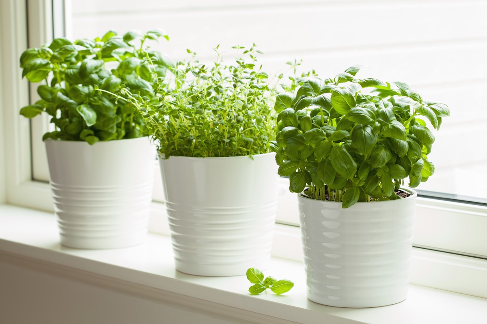

Apa itu Tanaman Herbal?
Tanaman herbal atau dapat kita sebut sebagai tanaman obat merupakan sejenis apotek hidup. Dengan kata lain, tanaman yang sebagian maupun seluruh dari isi tanaman herbal tersebut memiliki manfaat sebagai obat, ramuan maupun bahan obat.
Kementerian Pertanian Indonesia bahkan telah menyatakan bahwa tanaman obat merupakan tanaman yang memiliki manfaat untuk kosmetik, obat maupun untuk kondisi kesehatan lainnya. Sebagai sebuah pengobatan alternatif, tanaman obat meliputi batang, daun, umbi, buah hingga bagian akar dari tanaman ini.
WHO atau Badan Kesehatan Dunia sendiri, mendefinisikan tanaman obat sebagai obat herbal atau medicinal plants yang memiliki manfaat serta memiliki tujuan sebagai pengobatan serta sebagai bahan asli pembuatan obat-obat herbal. Kemudian, laman Better Health menjelaskan bahwa tanaman herbal merupakan obat-obatan tradisional yang berasal dari apotek hidup.
Meski sudah dimanfaatkan secara turun-temurun, namun jika tidak dimanfaatkan dengan baik, tanaman ini bisa menimbulkan gangguan kesehatan. Untuk itu, jangan sembarangan mengonsumsi tanaman obat dan ingatlah untuk mengonsumsinya sesuai petunjuk atau saran ahlinya.
Cara Mengonsumsi Tanaman Herbal
Ada berbagai jenis tanaman herbal yang bisa dikonsumsi. Mereka biasanya diolah menjadi berbentuk bubuk, kapsul, krim, dikeringkan, dicacah, hingga dijadikan cairan.
Berikut ini cara menggunakan tanaman herbal yang umum dilakukan, yaitu:
1. Obat herbal berbentuk kapsul biasanya langsung dikonsumsi menggunakan air putih.
2. Obat herbal yang telah dihancurkan bisa dikonsumsi seperti teh.
3. Obat herbal yang berbentuk krim bisa langsung dioleskan pada bagian tubuh yang memerlukan perawatan.
4. Obat herbal juga bisa digunakan untuk berendam menggunakan air hangat.
5. Obat herbal yang dikeringkan bisa dikonsumsi dengan cara direbus.
Hal yang Perlu Diperhatikan
Berikut ini hal yang perlu kamu perhatikan sebelum menggunakan bahan herbal:

1. Pastikan kamu mengetahui informasi dan penjelasan mengenai bahan herbal yang akan kamu gunakan.
2. Jika kamu memutuskan untuk menggunakan bahan herbal sebagai pengobatan, jangan gunakan sebagai pengobatan utama. Gunakan sebagai perawatan pendukung saja.
3. Pastikan kamu mengikuti dosis atau cara konsumsi yang sesuai dengan keterangan yang diberikan.
4. Waspada terhadap reaksi alergi yang bisa terjadi setelah mengonsumsi obat herbal.
Tidak ada salahnya mencari tahu produsen atau pembuat obat herbal yang akan kamu konsumsi untuk memastikan keamanan dan kebersihan dari obat yang kamu konsumsi.
Siapa Saja yang Lebih Baik Menghindari Tanaman Herbal?
Bahan herbal tidak dapat dikonsumsi oleh semua orang. Ada beberapa kelompok yang sebaiknya menghindari penggunaan untuk pengobatan, seperti:
- Pengidap gangguan ginjal.
- Ibu hamil dan menyusui.
- Lansia.
- Anak-anak.
Efek Samping
Efek samping tanaman herbal yang perlu diwaspadai, yaitu:
- Reaksi alergi.
- Ruam.
- Asma.
- Pusing.
- Sakit kepala.
- Mual.
- Muntah.
- Perut kembung.
- Diare.